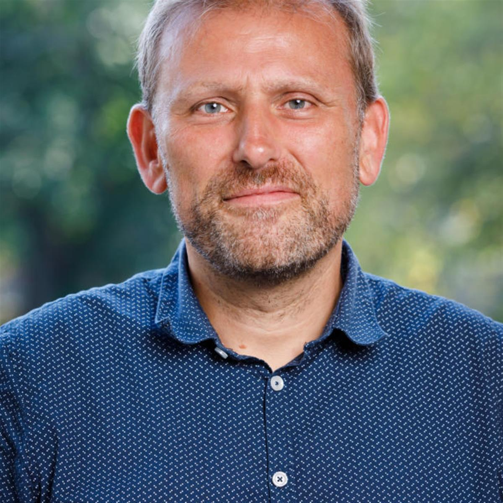
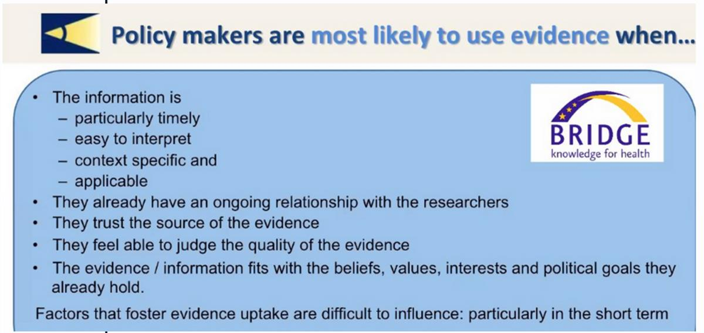

Published on 10 September 2020, 05:00. Updated on 10 September 2020, 06:13.
A happier marriage between science and policy - some advice from Swiss Public health experts
by Svet Lustig
Here’s a stunning fact. In the US, less than one in ten model public health laws proposed for adoption by national, state or local governments are actually backed by scientific evidence – in fact only 6.5%, according to the findings of a recent study. That illustrates how public health researchers and policymakers often live in “very different worlds” that are challenging to reconcile, said professor of health science Gerold Stucki, at the opening of last week’s annual Swiss Public Health Conference, entitled “From Evidence to Public Health Policy and Practice”.
'Policymakers and researchers have different mindsets, different requirements and different performance indicators,” said Stucki. 'It's just different worlds and the question is how to bring them together.'
“The relationship between science and policy equals an unhappy marriage,' added Andreas Balthasar, who teaches political science at the University of Luzern. 'So it's a miracle that they can cooperate, because the basic principles are very different.'
Why it matters. If Covid-19 has taught us anything, it is that evidence-based policies – such as hand-washing, physical distancing, and mask-wearing – are critical to saving lives. But the first six months since the pandemic was officially declared on 11 March have also demonstrated that such evidence is often discounted or ignored, said panelists at last week’s conference. The panelists offered public health researchers advice on how they could improve their chances of successfully seeing their findings translated into policy.
And as the pandemic has also fuelled public distrust, while coronavirus science remains elusive, the challenge of closing the gap between research and policy is bigger than ever, the panelists concluded.
“The academic community still has a lot to learn about translating science into tangible proposals for action,” said director of the Swiss School of Public Health (SSPH+) Nino Kunzli. “There is still a long way to go.”
Scientific research to policy – a tough balancing act for policymakers. Translating scientific research into policy is often complex and time-consuming because policymakers must balance the hard data with public sentiment, resource constraints and competing demands between various stakeholders, warned Suszy Lessof, director of management at the European Observatory on Health Systems and Policies which promotes evidence-based health policy-making in Europe. Policymakers may not understand scientific evidence because they are not science mavens, added Fritz Sager, professor of political science at the University of Bern. As a result, they may not even review the evidence, he added.
'Politicians are not against scientific evidence, but they don't understand it,” said Sager, who is also a visiting Scholar at the Harvard University’s Center for European Studies. “They don't actually read it at all.”

Fritz Sager, professor of political science at the University of Bern. Source: Center for European Studies.
Scientific facts are insufficient to trigger political momentum on their own. Even if policymakers understand scientific evidence, they may not act on it because scientific facts cannot win political debates. Policymakers may also resist accepting the evidence at all.
“Facts alone cannot win political debates. Facts do not conquer hearts, and you need to conquer hearts in order to win a political debate,' said Sager, referring to his research on the use of evidence in Swiss policy-making. “In politics, emotional appeal is a very, very important feature to make your point.'
'Even if scientists provide evidence to policymakers, it doesn't mean that everyone agrees the issue [they raise] is actually an issue.”
Climate science provides a dramatic example of the diversion between science and politics. Scientific evidence of human-made climate change has been robustly articulated for nearly 25 years by the Intergovernmental Panel on Climate Change (IPCC), the largest such panel of climate scientists in the world. However, UN and WHO officials have repeatedly warned that the world is falling desperately short of translating such knowledge into binding and effective policies – all of which can protect human health.
That’s because evidence always enters into what some observers have described as “a soup of values, beliefs, preferences, and needs’ to which researchers must relate. As Sager has written, “Interventions are often chosen on the basis of implicit judgments about feasibility that are prone to subjective bias and personal opinion rather than careful scrutiny of possible interventions.”
How to bridge the gap between science and policy? Research by the European Observatory on Health Systems and Policies shows that policymakers are more likely to use scientific evidence when they have an ongoing relationship with researchers, and when it reinforces their own pre-existing beliefs, said Anna Sagan, research fellow at the Observatory.
Anna Sagan, research fellow at the European Observatory of Health. Source: Anna Sagan.
“Research has made it clear that policymakers are more likely to use evidence when they have an ongoing relationship with researchers... and when evidence fits their values and political goals.”
Tailoring scientific evidence to the target audience – a six-point checklist. Scientists need to understand their target audience and adjust their message accordingly, notes Sager. While the general population needs to know that a problem exists (for example, the deadly consequences of climate change or the Covid-19 pandemic), policymakers need advice on specific actions to take, how to implement those while considering the human and political dimensions. Sager cites a six-point checklist for researchers to consider, in formulating policy advice, that includes:
- State the problem to be solved by policy and outline the evidence to back it up.
- Define the aspects of the problem that can be addressed with policy and explain its significance
- State the causes of the problem and identify who is causing the problem.
- Identify policy proposals that can change the behaviour of the problem-makers so that they no longer cause the problem.
- Assess the feasibility of the policy proposal. Is political opposition strong? Can the proposal be framed to improve political acceptance?
- Assess the feasibility of the policy proposal. Is the target group likely to comply or resist the proposal? How can such resistance be addressed?
Quick and dirty. Policymakers are also more likely to use scientific evidence when it is timely, easy to interpret, and applicable to real-life concerns. Most importantly, scientific findings must be “quick and dirty,” emphasized Isabel de la Mata, the European Commission's principal advisor for health and crisis management. She said that sometimes, policymakers are left to decode 450-page jargon-laden reports that are unsuitable to policymakers' needs.
“Researchers and policymakers need to work together, but for that to happen, researchers can't make policymakers read a 500-page report that was requested several years ago,” said de la Mata. “Short messages would help to make that policy pass.'

Source: European Observatory of Health.
New Swiss collaboration to strengthen the research-policy continuum on Covid-19. There is a “new consensus” that effective communication is a win-win for both policymakers and researchers, said Kunzli, citing the Covid-19 SSPH+ exchange platform as an excellent example of collaboration between the Swiss scientific community and the Federal Office of Public Health (OFSP). It is open to all researchers and public agencies but is closed to the public and the media. Details:
- Aggregating the scientific evidence. The platform summarizes the scientific community’s views to help the federal and cantonal authorities make the right decisions.
- Supporting federal policymaking. The scientific knowledge offered by the Covid-19 exchange platform assists the policy-making process because it is accessible to all members of the Swiss Covid-19 Science Taskforce, which acts as an advisory body to the Federal Council. The Taskforce has already published some 50 policy briefs on the Covid-19 crisis.
'We realized that there was a need to channel the communication between scientific experts and frontrunners [policymakers],” said Kunzli, referring to the Covid-19 SSPH+ platform. 'In contrast to the crucial and wonderful Swiss COVID-19 Science Task Force, the platform [doesn't aim] to provide advice, but to give the OFSP summarized insights into the diverse views of [our] multidisciplinary community of experts.”
“I hope many more of us find the time and the language to conquer hearts to bring science to policy. We need [effective communication] during very difficult times, and I hope our community will not spread divide, but collaboration.'
Nino Kunzli, director of the Swiss School of Public Health. Source: Geneva Health Forum.
SOURCE: GENEVA SOLUTIONS